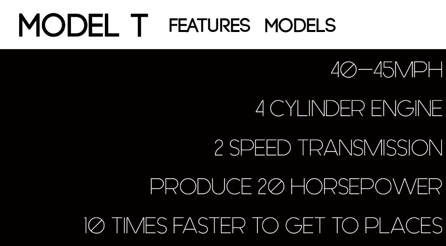
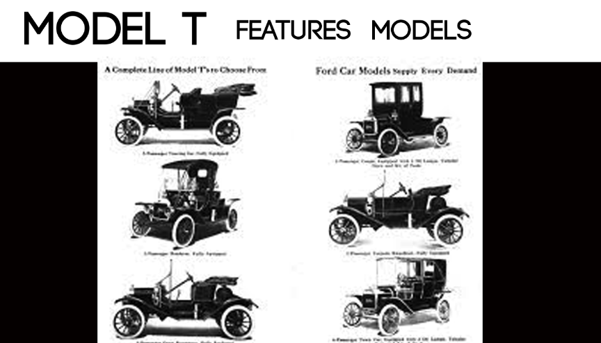

Home
About
About
This “model t” website and mock up was for a US History project in my junior year of high school. We had to sell something from the industrial revolution we had to have something visual. My group decided to make a website for ours. I made the website mockup using adobe photoshop and I made the actual website using adobe muse. It gave me an understanding of how to make mockups for websites fast and it gave me an even better understanding of how to use adobe muse.